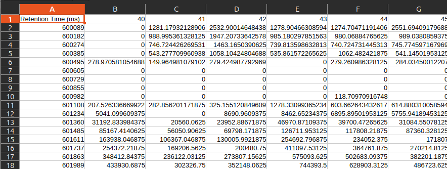
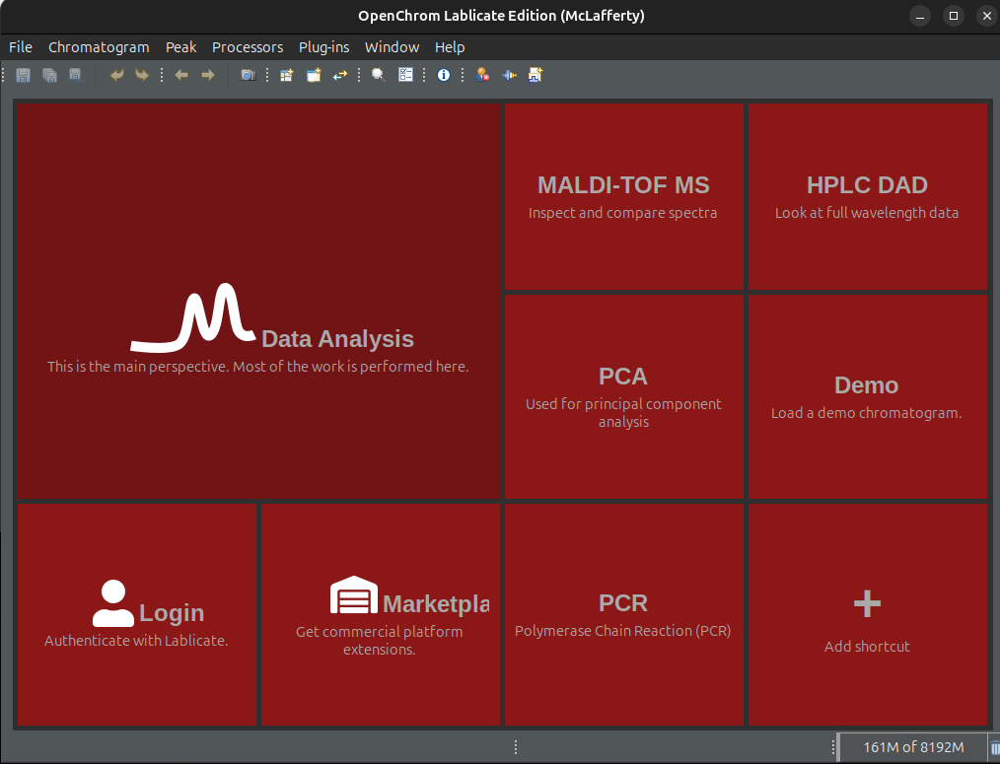
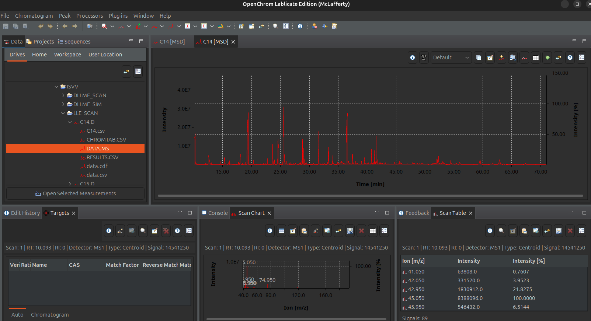

Data Preparation¶
A fundamental part of the wine data analysis is the preparation of the data into the format required for the different scripts. The data is expected as csv files contained in folders whose name is the same as the sample with an added “.D”. For instance, if we have a sample named Sample_1, then there should be a folder named Sample_1.D containing a csv file named Sample_1.csv. The reason for this format is that GC-MS software like Agilent ChemStation typically export in this way.
The dataset hierarchy should look like the following:
datasets/
├── PINOT_NOIR/
│ ├── Sample1.D/
│ ├── Sample2.D/
│ └── ...
└── ...
- Once opened, the csv file within each .D directory should look like this:
- 
, where the first column is the retention time and the next columns are the intensity signals of each m/z channel (starting at 40 in this example).
Creating csv files¶
GCMS data coming from Agilent products can come in several formats. The ones considered here are files with extension .ms or .cdf (eg. data.ms or data.cdf). To convert these files into csv files that can be read by the scripts, we used a third party software called OpenChrom (Lablicate Edition). There are probably many other ways to do this but using this package was the most straightforward (or at least the one that worked). Once OpenChrome is installed and opened, you will see the following screen:

Then do the following:
Click on Data Analysis panel to go to next screen
In the browser on the top left panel go to your dataset and find the .D folder corresponding to the sample you want to convert to csv.
Expand the content of the folder and look for a file with .ms or .cdf extension. They are typically called data.ms or data.cdf
Double click the file to open the chromatogram
- After double clicking the fie, you will get something like this:
- 
Now that the chromatogram is loaded, you can export it to csv file by going to to the top menu, then Chromatogram -> Export -> CSV Chromatogram (*.csv)
{kind=link}
The file will be exported on the predetermined folder. To set this folder to one of your like, go to Window -> Preferences -> Chromatography/Spectrometry -> Converter -> Chromatogram Export Path
{kind=link}
You will have to do this for every sample, which depending on the size of your dataset will be viable or not. For larger datasets you may have to find an automated way of doing this.
Once all directories contain csv files, you are ready to run the scripts.